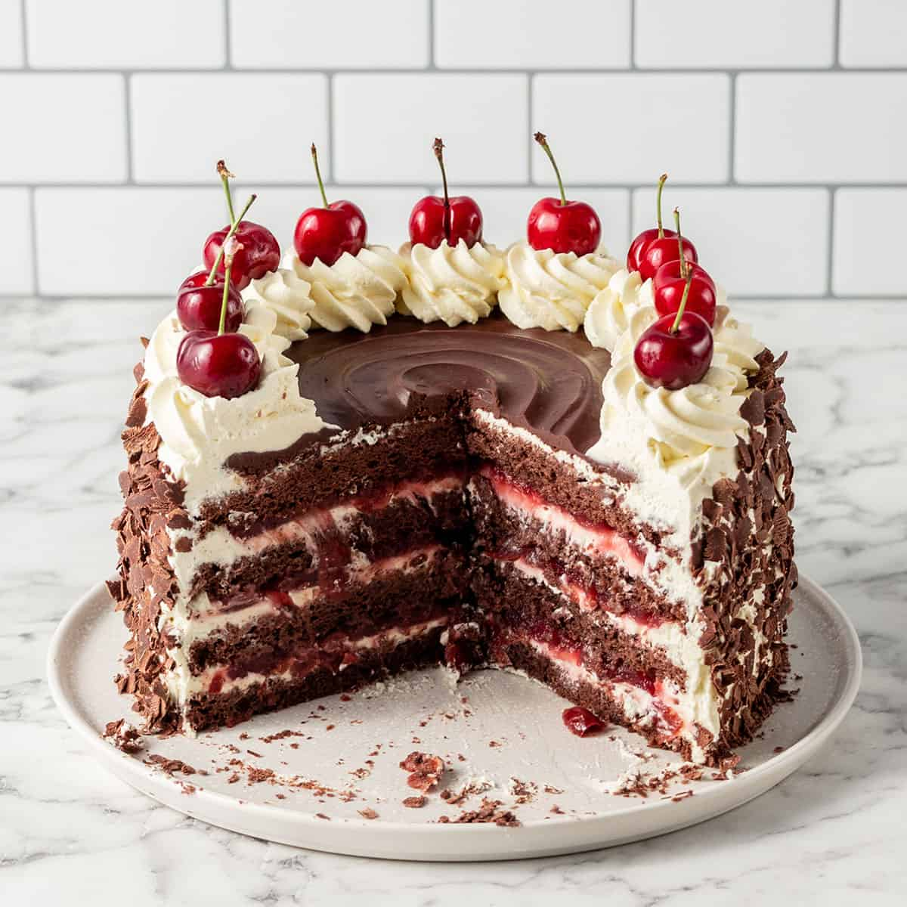

Recipe for Black Forest Cake

Description
Black Forest Cake, named after the enchanting Black Forest region in Germany, is a classic dessert that blends
the richness of chocolate with the lusciousness of cherries. This indulgent cake is a masterpiece of flavors and
textures, featuring layers of moist chocolate sponge cake, velvety whipped cream, and juicy, dark red cherries.
The heart of the Black Forest Cake is its layers of chocolate sponge cake, which are often soaked in a touch of
cherry liqueur to infuse them with a hint of deep, fruity flavor. Sandwiched between these layers is a luxurious
spread of whipped cream, adding a light and airy contrast to the dense cake. The cake's true character, however,
comes from its generous filling of tart cherries—either fresh, preserved, or in the form of cherry
compote—adding bursts of vibrant color and a sweet-tart complexity.
Decorated with chocolate shavings, maraschino cherries, and sometimes a final flourish of whipped cream, Black
Forest Cake is as visually appealing as it is delightful to the palate. The combination of moist cake, creamy
layers, and the irresistible combination of chocolate and cherries makes each bite a harmonious symphony of
tastes.
Black Forest Cake is not just a dessert; it's a celebration of contrasts and harmonies that has transcended its
German roots to become a globally adored treat. Its timelessness and universal appeal make it a showstopper at
special occasions, from birthdays to anniversaries, where it's sure to evoke joy and nostalgia with every
forkful.
Ingredients
- 2 cups all-purpose flour
- 2 cups granulated sugar
- 3/4 cup unsweetened cocoa powder
- 1 1/2 teaspoons baking powder
- 1 1/2 teaspoons baking soda
- 1 teaspoon salt
- 2 large eggs
- 1 cup milk
- 1/2 cup vegetable oil
- 2 teaspoons vanilla extract
- 1 cup boiling water
- 1 can (21 ounces) cherry pie filling
- 2 cups heavy whipping cream
- 1/4 cup confectioners' sugar
- 1 teaspoon vanilla extract (for whipped cream)
- Chocolate shavings or curls for garnish
- Maraschino cherries for decoration
Recipe
- Preheat the oven to 350°F (175°C) and grease and flour two 9-inch round cake pans.
- In a mixing bowl, sift together 2 cups all-purpose flour, 3/4 cup cocoa powder, 1 1/2 teaspoons baking
powder, 1 1/2 teaspoons baking soda, and 1 teaspoon salt.
- In a separate bowl, beat 2 large eggs until fluffy, then gradually add 2 cups granulated sugar, beating
until well combined.
- Stir in 1 cup milk, 1/2 cup vegetable oil, and 2 teaspoons vanilla extract into the egg mixture.
- Add the dry ingredients to the wet ingredients in batches, mixing until just incorporated.
- Stir in 1 cup boiling water to thin the batter. The batter will be thin, but that's normal.
- Divide the batter evenly between the prepared pans and bake for 25-30 minutes, or until a toothpick inserted
into the center comes out clean.
- Allow the cakes to cool in the pans for about 10 minutes, then turn them out onto wire racks to cool
completely.
- Once the cakes are cool, use a serrated knife to level the tops if necessary.
- Whip 2 cups heavy whipping cream with 1/4 cup confectioners' sugar and 1 teaspoon vanilla extract until
stiff peaks form. This will be the whipped cream filling and topping.
- Place one cake layer on a serving plate. Spread a layer of whipped cream on top.
- Spoon half of the canned cherry pie filling over the whipped cream layer.
- Place the second cake layer on top and press gently to secure it.
- Frost the entire cake with the remaining whipped cream, covering the sides and top evenly.
- Garnish the top with chocolate shavings or curls and decorate with maraschino cherries.
- Refrigerate the cake for a few hours to allow the flavors to meld before serving.
- Slice and savor the delightful layers of chocolate, cream, and cherries in this Black Forest Cake!